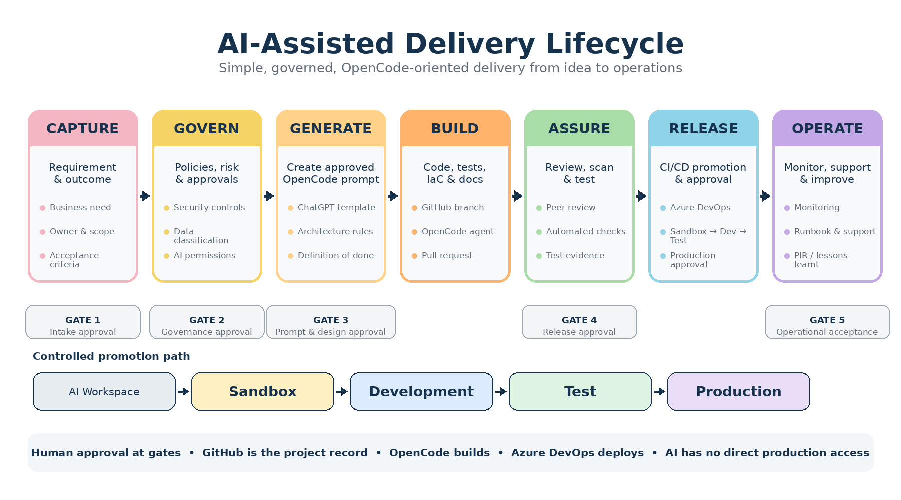

Infrastructure & Security
Deliver technology initiatives safely, efficiently and transparently — from capture through to operations.

Five gates from intake to operational acceptance with clear decisions and minimum evidence requirements.
→ Risk + CostFinancial and risk-based criteria to classify projects as small, medium or large with appropriate oversight.
→ ArtefactsRepository-based documentation requirements scaled by project size — from brief records to detailed artefacts.
→Capture the business requirement in a short, structured request with problem, outcome, users, systems, constraints and acceptance criteria.
→ Phase 2Identify applicable policies, data classifications, security standards and agent permissions before information is provided to AI.
→ Phase 3Use ChatGPT with a standard template to produce a controlled OpenCode delivery prompt covering scope, tests, security and approvals.
→ Phase 4OpenCode creates application code, tests, infrastructure, documentation and deployment definitions within an approved repository.
→ Phase 5Code moves through AI Workspace, Sandbox, Development and Test environments with progressively stricter controls and checks.
→ Phase 6Azure DevOps orchestrates CI/CD from pull request through sandbox, development, test and production with approval gates.
→ Phase 7Production verification, monitoring, incident response, vulnerability management, access reviews and continuous improvement.
→ TemplateComplete OpenCode delivery prompt for an ICT Asset Governance Manager — architecture, integrations, domain model, risk scoring, workflows, CI/CD, and delivery phases.
→